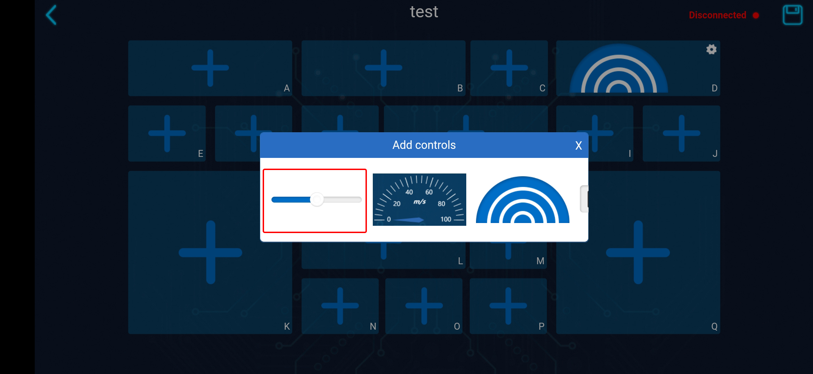
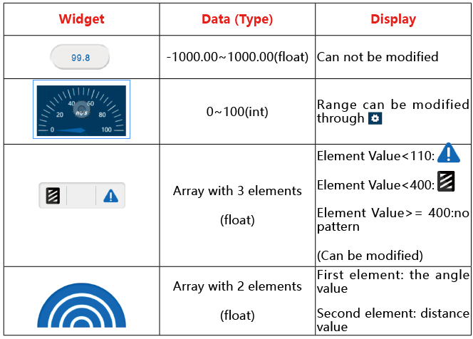

APP Control¶
这个章节将会指引你使用Sunfounder Controller APP来远程玩耍pico-4wd，这意味着你可以在户外使用手机/平板来控制它四处游荡。
How to do?¶
Coding
为了方便理解，让我们使用 tests 文件夹下的
app_test.py（这个代码将会在后面讲解） 来完成第一个 Sunfounder Controller 的实验吧！运行程序后（此时Pico RDP应也在工作状态），Pico-4wd并没有什么现象。Thonny script 则会出现以下的提示：
>>> %Run -c $EDITOR_CONTENT Connecting WebServer started on ws://192.168.4.1:8765 startInstall Sunfounder Controller
Search for Sunfounder Controller in APP Store (or Google Play). Download it.

连接设备。
在手机（平板）的WLAN上找到
my_4wd_car,连接它，密码是12345678,这是由Pico RDP释放出来的AP，是不连通万维网的。(如果你需要保持手机(平板)的网络，则可以改用STA模式，这将在后面说道。)连接成功后，Thonny script 则会显示新连接设备的IP：
>>> %Run -c $EDITOR_CONTENT Connecting WebServer started on ws://192.168.4.1:8765 start Connected from 192.168.4.3Open Sunfounder Controller , and you will see the HOME PAGE，点击最右上方的icon完成Pico-4wd与手机（平板）的连接.

中间的大的加号按键可以创建控制器，你可以在Sunfounder Controller中创建多个控制器方案。
点击左上角的icon可以查看 “ABOUT US”
右上方红字显示的是Sunfounder Controller当前的连接状况。如果连接到设备（如Pico-4wd）将会变成白色字体。
编辑按键可以允许你删除多余的控制器。
你会需要点击最右上方的链接icon来链接到设备。需要注意的是，只有在设备正在运行程序时，Sunfounder Controller才能成功连接（重新烧录代码后将需要重新连接）。
创建一个控制器，你将能看到一个个的box(一些是矩形，一些是正方形)，我们需要调整它们，以适用于
app_test.py。
点击区域D，选择 “雷达” widget。

点击区域H，选择 “滑条” widget。
点击最右上方的 save icon，控制器会被保存。同时进入工作状态，空的 widget box 隐藏。 （此时原来的 save icon 将会变成 edit icon，点击它可以返回edit状态，以调整widget）。

运行。
点击 edit icon 旁边的 run icon，Pico-4wd终于动起来了！（如果未能如期望进行，或 Run icon 旁显示 “Disconnected” ，请重新进行Pico-4wd与手机（平板）的连接，and try again!）
你将能看到 Pico-4wd 的雷达正在扫描，Sunfounder Controller 上的 D box会显示扫描结果；你拨动 H box 的滑条，车尾部的 RGB Board 也会点亮相应的灯。
How it work?¶
Pico-4wd和Sunfounder Controller之间的通信基于websocket协议。
其功能已经被写入在了 ws.py 中，我们在章节 Import Pico-4wd Libraries 已经将其载入。
APP Control 玩法的具体的工作流程如下：

代码如下：
from ws import WS_Server
import json
import time
import pico_4wd as car
NAME = 'my_4wd_car'
## Client Mode
# WIFI_MODE = "sta"
# SSID = "YOUR SSID HERE"
# PASSWORD = "YOUR PASSWORD HERE"
## AP Mode
WIFI_MODE = "ap"
SSID = ""
PASSWORD = "12345678"
ws = WS_Server(name=NAME, mode=WIFI_MODE, ssid=SSID, password=PASSWORD)
ws.start()
def on_receive(data):
# write control codes here.
pass
# write sensor codes here.
pass
ws.on_receive = on_receive
def main():
print("start")
while True:
ws.loop()
try:
main()
finally:
car.move("stop")
car.set_light_off()
这个代码已经构成了APP控制的基本框架。在这之中你需要关注的是三个部分：
设置websocket服务器
你可以让连接模式在 Client Mode 和 AP Mode间切换。
默认情况下，Pico-4wd的默认连接方式是 AP Mode ：Pico RDP放出热点（Wifi名是代码中的
NAME，在这里是my_4wd_car），手机(平板)连接到这个WLAN中。这个模式可以让你在任何场合遥控Pico-4wd，但是会让你的手机(平板)暂时无法连接网络。NAME = 'my_4wd_car' ## Client Mode # WIFI_MODE = "sta" # SSID = "YOUR SSID HERE" # PASSWORD = "YOUR PASSWORD HERE" ## AP Mode WIFI_MODE = "ap" SSID = "" PASSWORD = "12345678" ws = WS_Server(name=NAME, mode=WIFI_MODE, ssid=SSID, password=PASSWORD) ws.start()
你也可以该用 Client Mode : 让Pico RDP连接到你的家庭WLAN，你的手机(平板)也应当连接在同一个WLAN下。这个模式与AP模式相反，不会影响手机（平板）的正常使用，但是会限制你的Pico-4wd不能离开WLAN的辐射范围。
启动该模式的方法是注释掉
## AP Mode下的3行，取消注释## Client Mode下的三行，同时将 SSID 和 PASSWORD 改成你的家庭 WIFI。NAME = 'my_4wd_car' ## Client Mode WIFI_MODE = "sta" SSID = "Sunfounder" PASSWORD = "12345678" ## AP Mode # WIFI_MODE = "ap" # SSID = "" # PASSWORD = "12345678" ws = WS_Server(name=NAME, mode=WIFI_MODE, ssid=SSID, password=PASSWORD) ws.start()
完成连接模式设置后，Websocket将会架设并启动服务器。
ws = WS_Server(name=NAME, mode=WIFI_MODE, ssid=SSID, password=PASSWORD) ws.start()
响应程序
Pico-4wd 与 Sunfounder Controller 的具体运作代码写在
on_receive()函数上。通常，我们需要将 APP控制Pico-4wd的代码写在前方，APP展示Pico-4wd传感器数据的代码写在后方。def on_receive(data): # write control codes here. pass # write sensor codes here. pass ws.on_receive = on_receive
在这个示例中，我们写入了 H 区域滑条控制RGB Board灯光点亮数目的控制代码；以及 D 区域展示雷达检测结果的展示代码。
def on_receive(data): # write control codes here. num = int(data['H_region']*9/100) for i in range(0,num): car.write_light_color_at(i, [80, 50, 0]) for i in range(num,8): car.write_light_color_at(i, [0, 0, 0]) car.light_excute() # write sensor codes here. data = car.get_radar_distance() print(data) ws.send_dict['D_region'] = data ws.on_receive = on_receive
最后，
on_receive()会被赋值到ws.on_receive从而被ws.loop调用。传输数据（From APP to Pico-4wd）
让我们来直观的看看，Pico-4wd 会从 APP 中获得什么样的数据。在
on_receive中直接将data打印出来。def on_receive(data): # write control codes here. print(data) # write sensor codes here. pass
你将能看到以下的字符串：
{'J_region': None, 'A_region': None, 'L_region': None, 'K_region': None, 'F_region': None, 'M_region': None, 'H_region': 50, 'Q_region': None, 'G_region': None, 'I_region': None, 'B_region': None, 'D_region': None, 'C_region': None, 'N_region': None, 'E_region': None, 'P_region': None, 'O_region': None}
如我们所见，我们看到 H Box 的值为50 ( ‘H_region’: 50 ) ，而其他为 None ， 这是因为我们只在 H Box 添加了用于控制的 widget。（ D 区域的widget不用于控制只用于显示。）
我们可以在 Box 中添加其他的widget，也能用相同的方法查看到这些widget传入Pico-4wd的值。
而需要使用时，只需通过label即可取出对应widget的值。如下方，打印 H Box widget 的值：
def on_receive(data): # write control codes here. print(data['H_region']) # write sensor codes here. pass
>>> %Run -c $EDITOR_CONTENT Connecting WebServer started on ws://192.168.4.1:8765 start Connected from 192.168.4.3 50 50 50在Sunfounder Controller中，用于控制的widget包括以下几种：

Pico-4wd 封装有使用模块的函数，我们可以将widget的值写入这些函数中来实现一些事情。如在这里我们使用滑条控制车尾的RGB Board。
def on_receive(data): # write control codes here. num = int(data['H_region']*9/100) for i in range(0,num): car.write_light_color_at(i, [80, 50, 0]) for i in range(num,8): car.write_light_color_at(i, [0, 0, 0]) car.light_excute()
具体的调用Pico-4wd模块的方法请查看 API 。
传输数据（From Pico-4wd to APP）
Pico-4wd 封装有使用传感器模块的函数，如读取读取了雷达的值。
def on_receive(data): # write sensor codes here. data = car.get_radar_distance() print(data)
>>> %Run -c $EDITOR_CONTENT Connecting WebServer started on ws://192.168.4.1:8765 start Connected from 192.168.4.2 [-10, 49.249] [-20, 37.417] [-30, 38.947] [-40, 36.193] [-50, 40.12] [-60, 36.431]具体的调用Pico-4wd模块的方法请查看 API 。
将这些函数值直接返回到对应的 Box 即可。将其雷达的值输出到D区域的雷达widget。
def on_receive(data): # write sensor codes here. data = car.get_radar_distance() print(data) ws.send_dict['D_region'] = data
在Sunfounder Controller中，用于输出的widget包括以下几种：

APP Control Example¶
现在，请打开 examples 中de app_control.py ，尝试完整的APP遥控玩法吧！

from ws import WS_Server
import json
import time
import pico_4wd as car
NAME = 'my_pico_car'
# Client Mode
# WIFI_MODE = "sta"
# SSID = "YOUR_SSID_HERE"
# PASSWORD = "YOUR_PASSWORD_HERE"
# AP Mode
WIFI_MODE = "ap"
SSID = ""
PASSWORD = "12345678"
ws = WS_Server(name=NAME, mode=WIFI_MODE, ssid=SSID, password=PASSWORD)
ws.start()
led_status = False
def on_receive(data):
global led_status
#Move
if 'K_region' in data.keys() and 'H_region' in data.keys():
# print(data['K_region'])
if data['K_region'] == "left":
car.write_light_color_at(0, [0, 0, 0])
car.write_light_color_at(1, [0, 0, 0])
car.write_light_color_at(6, [50, 50, 0])
car.write_light_color_at(7, [50, 50, 0])
elif data['K_region'] == "right":
car.write_light_color_at(0, [50, 50, 0])
car.write_light_color_at(1, [50, 50, 0])
car.write_light_color_at(6, [0, 0, 0])
car.write_light_color_at(7, [0, 0, 0])
else:
car.write_light_color_at(0, [0, 0, 0])
car.write_light_color_at(1, [0, 0, 0])
car.write_light_color_at(6, [0, 0, 0])
car.write_light_color_at(7, [0, 0, 0])
car.light_excute()
car.move(data['K_region'], data['H_region'])
# RGB LED
if 'M_region' in data.keys():
led_status = data['M_region']
# speed measurement
ws.send_dict['A_region'] = car.speed()
if led_status:
# HUE color system, Red is 0, and Green is 120
hue = car.mapping(car.speed(), 0, 70, 120, 0)
rgb = car.hue2rgb(hue)
car.set_light_bottom_color(rgb)
else:
car.set_light_off()
# radar
ws.send_dict['D_region'] = car.get_radar_distance()
# greyscale
ws.send_dict['L_region'] = car.get_grayscale_values()
ws.on_receive = on_receive
def main():
print("start")
while True:
ws.loop()
try:
main()
finally:
car.move("stop")
car.set_light_off()